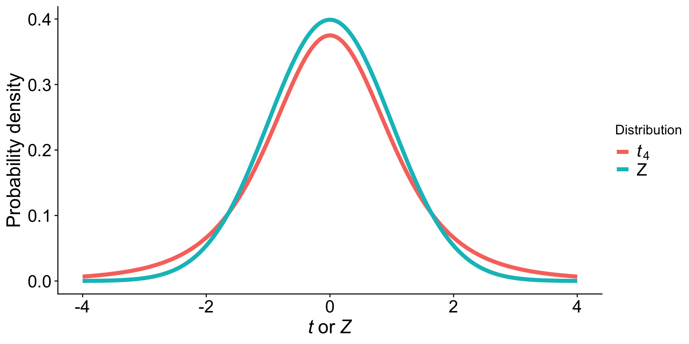
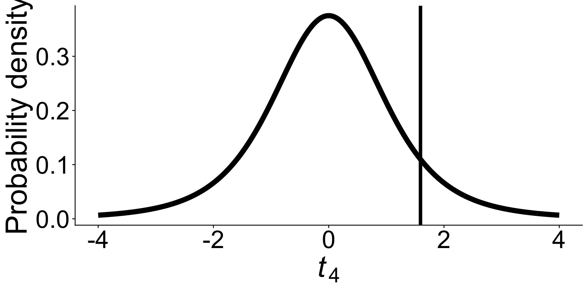
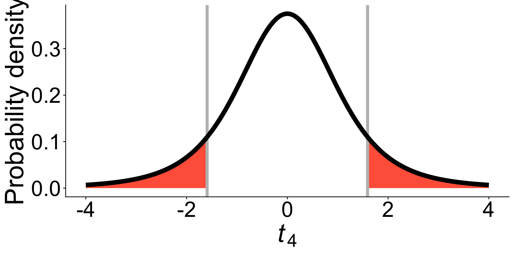
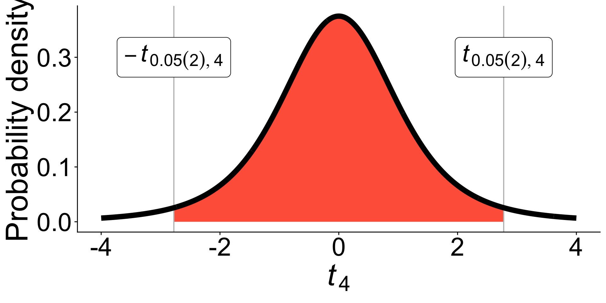
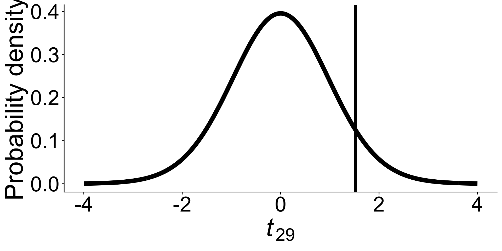
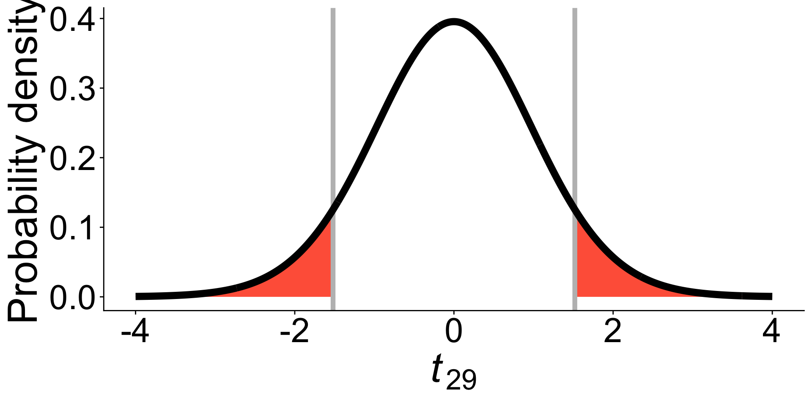

lapu
Cook pine (Araucaria columnaris) is endemic to New Caledonia (Southern hemisphere), but common in many parts of the world, including Hawaiʻi
Johns et al. (2017) measured axial lean of Cook pines planted all over the world. Their biological hypothesis was that Cook pines lean toward the equator.
Axial lean:
Positive value \(\rightarrow\) tree leans toward equator
Negative value \(\rightarrow\) tree leans away from equator
Johns et al. (2017) measured axial lean of Cook pines planted all over the world. Their biological hypothesis was that Cook pines lean toward the equator.
Axial lean:
Positive value \(\rightarrow\) tree leans toward equator
Negative value \(\rightarrow\) tree leans away from equator
Consider small random sample (\(n = 5\))
-0.04, 0.00, 0.06, 0.12, 0.20
-0.04, 0.00, 0.06, 0.12, 0.20
| \(\overline{Y}\) | \(s\) | \(s^2\) |
|---|---|---|
| 0.068 | 0.095 | 0.009 |
-0.04, 0.00, 0.06, 0.12, 0.20
| \(\overline{Y}\) | \(s\) | \(s^2\) |
|---|---|---|
| 0.068 | 0.095 | 0.009 |
\(H_0\): The mean axial lean is 0 (\(\mu = 0\))
\(H_A\): The mean axial lean is not 0 (\(\mu \ne 0\))
We want to know the sampling distribution for the difference between sample mean \(\overline{Y}\) and the population mean \(\mu\)
\(Z\)-standardization gives us a standard normal sampling distribution (mean = 0, sd = 1):
\[Z = \frac{\overline{Y} - \mu}{\sigma_{\overline{Y}}}\]
BUT, we don’t know the population standard error of the mean \(\sigma_{\overline{Y}}\), we have to estimate from the sample \(\textrm{SE}_{\overline{Y}}\).
The difference between the sample mean and the true mean (\(\overline{Y} - \mu\)), divided by the estimated standard error (\(\textrm{SE}_{\overline{Y}}\)), has a Student’s \(t\)-distribution with \(n - 1\) degrees of freedom.
The \(t\) distribution accounts for the fact that we have to estimate both \(\mu\) and \(\sigma\) from the sample
\[t = \frac{\overline{Y} - \mu}{\textrm{SE}_{\overline{Y}}}\]
\(t\) is like \(Z\) except there is uncertainty about the sample standard error
The \(t\) distribution accounts for the fact that we have to estimate both \(\mu\) and \(\sigma\) from the sample
\[t = \frac{\overline{Y} - \mu}{\textrm{SE}_{\overline{Y}}}\]
\(t\) is like \(Z\) except there is uncertainty about the sample standard error
How would you expect the uncertainty of the estimated standard error to affect the shape of the \(t\) distribution relative to the \(Z\) distribution?

The \(t\) distribution is like the standard normal (\(Z\)) but has longer tails that account for the fact that we estimate \(\sigma\) from the sample
This matters because \(P\)-values are calculated by integrating the tails of the distribution. Change in the shape of the tails affect your inference!
The one-sample \(t\)-test compares the mean of a random sample for a normal population with the population mean proposed in a null hypothesis
State null and alternative hypotheses
Calculate test statistic
Identify null distribution
Calculate \(P\)-value
Decide:
\(H_0\): The true (population) mean equals \(\mu_0\)
\(H_A\): The true (population) mean does not equal \(\mu_0\)
Often, \(\mu_0 = 0\), like in our example:
\(H_0\): The mean axial lean is 0 (\(\mu = 0\))
But \(\mu_0\) could be something else depending on what you’re testing
\[t = \frac{\overline{Y} - \mu_0}{\text{SE}_{\overline{Y}}}\]
-0.04, 0.00, 0.06, 0.12, 0.20
| \(\overline{Y}\) | \(s\) | \(s^2\) |
|---|---|---|
| 0.068 | 0.095 | 0.009 |
Calculate \(\text{SE}_{\overline{Y}}\) and the \(t\) test statistic.
-0.04, 0.00, 0.06, 0.12, 0.20
| \(\overline{Y}\) | \(s\) | \(s^2\) |
|---|---|---|
| 0.068 | 0.095 | 0.009 |
\[\text{SE}_{\overline{Y}} = \frac{s}{\sqrt{n}} = \frac{0.095}{\sqrt{5}} = 0.043\]
\[t = \frac{\overline{Y} - \mu_0}{\text{SE}_{\overline{Y}}} = \frac{0.068 - 0}{0.043} = 1.592\]
Remember: the \(t\)-distribution comes from the standard normal, but with added uncertainty about the standard deviation.
We estimate the standard deviation, and account for its uncertainty, with a \(\chi^2\) distribution.
Thus our \(t\)-distribution has degrees of freedom: \(df = n - 1\)
For our study, \(5 - 1 = 4\) degrees of freedom
The \(t_4\) distribution looks like this:

One-sample \(t\)-test is usually two-sided because we would be equally surprised by a positive or negative difference from \(\mu_0\)
The \(t\) distribution is symmetrical around 0, so we can find the area under of the curve greater/less than and our test statistic and use that same value, times -1, on the other side

For a two-tailed test (most common)
For a one-tailed test (less common)
t.testSince \(P = 0.187\) is greater than \(\alpha = 0.05\), we fail to reject the null hypothesis.
We don’t have enough evidence to conclude that Cook pines lean towards the equator from this sample
Recall that previously we used the \(2~\mathrm{SE}\) approximation
The \(t\) intervals are more precise assuming the population is truly normally distributed
Recall definition of confidence intervals: 95% of the time, 95% confidence intervals will include the true population mean
\[-t_{0.05(2),\mathit{df}} < \frac{\overline{Y} - \mu}{\text{SE}_{\overline{Y}}} < t_{0.05(2),\mathit{df}}\]

\[\overline{Y}-t_{0.05(2),\mathit{df}} \text{SE}_{\overline{Y}}< \mu < \overline{Y}+t_{0.05(2),\mathit{df}} \text{SE}_{\overline{Y}}\]
For \(n = 5\), we have 4 degrees of freedom, so we calculate \(t_{0.05(2),4}\)
Which function do we need for calculating the confidence interval? dt, pt, qt, or rt?
\[\overline{Y}-t_{0.05(2),\mathit{df}} \text{SE}_{\overline{Y}}< \mu < \overline{Y}+t_{0.05(2),\mathit{df}} \text{SE}_{\overline{Y}}\]
For \(n = 5\), we have 4 degrees of freedom, so we calculate \(t_{0.05(2),4}\)
\[t_{0.05(2),4} = 2.776\]
\[\overline{Y}-t_{0.05(2),\mathit{df}} \text{SE}_{\overline{Y}}< \mu < \overline{Y}+t_{0.05(2),\mathit{df}} \text{SE}_{\overline{Y}}\]
\[\text{SE}_{\overline{Y}} = 0.043\] \[t_{0.05(2),4} = 2.776\]
Lower 95% CI: \(0.068 - 2.776 \times 0.043 = -0.051\)
Upper 95% CI: \(0.068 + 2.776 \times 0.043 = 0.187\)
Check it out, given to us by t.test:
One Sample t-test
data: y
t = 1.5922, df = 4, p-value = 0.1866
alternative hypothesis: true mean is not equal to 0
95 percent confidence interval:
-0.05057729 0.18657729
sample estimates:
mean of x
0.068 Two-sample t-test to the rescue
Paired \(t\)-test provides a control for extraneous variation and therefore have more power and precision.
Two-sample \(t\)-tests are often easier because you do not have to resample the same unit as in a paired comparison.
In the paired design, both treatments are applied to every sampled unit. In the two-sample design, each treatment group is composed of an independent, random sample of units
We used a paired \(t\)-test to compare stomatal traits on the upper and lower surface of the same leaves. The sampled units are the species, the treatments are the leaf surface
Because each member of a pair shares much in common, researchers can ignore extra variation (e.g. difference in stomatal traits among species) and just focus on effect of treatment
Examples of paired comparisons:
Paired measurements are converted to a single measurement by taking the difference between them
In other words, a paired \(t\)-test is a one-sample \(t\)-test
Does NOT assume that individual values are normally distributed
Identical to confidence intervals for mean of a single sample
We just replace \(\overline{Y}\) with \(\overline{d}\), \(\text{SE}_{\overline{Y}}\) with \(\text{SE}_{\overline{d}}\), and \(\mu\) with \(\mu_d\)
\[\overline{d}-t_{0.05(2),\mathit{df}} \text{SE}_{\overline{d}}< \mu_d < \overline{d}+t_{0.05(2),\mathit{df}} \text{SE}_{\overline{d}}\]
Paired \(t\)-test provides a control for extraneous variation and therefore have more power and precision.
Two-sample \(t\)-tests are often easier because you do not have to resample the same unit as in a paired comparison.
In the paired design, both treatments are applied to every sampled unit. In the two-sample design, each treatment group is composed of an independent, random sample of units
“Compare the means of two of a numerical variable between two independent groups” when there is no natural pairing of samples
The sample sizes do not have to be the same in each group.
| Genotype | \(\overline{Y}_i\) | \(s_i\) | \(n_i\) |
|---|---|---|---|
| Susceptible | 720 | 223.6 | 15 |
| Resistant | 582 | 277.3 | 16 |
| Genotype | \(\overline{Y}_i\) | \(s_i\) | \(n_i\) |
|---|---|---|---|
| Susceptible | 720 | 223.6 | 15 |
| Resistant | 582 | 277.3 | 16 |
The pooled sample variance is \(s_p^2 = \frac{\mathit{df}_1 s_1^2 + \mathit{df}_2 s_2^2}{\mathit{df}_1 +\mathit{df}_2}\)
\(s^2_1\) is the sample variance of sample 1
\(s^2_2\) is the sample variance of sample 2
\(\mathit{df}_1 = n_1 - 1\); \(\mathit{df}_2 = n_2 - 1\);
total degrees of freedom for \(t\) distribution: \(\mathit{df} = \mathit{df}_1 +\mathit{df}_2\)
\[s_p^2 = \frac{14 \times 223.6 ^2 + 15 \times 277.3^2}{14 + 15} = 63909.889310\]
| Genotype | \(\overline{Y}_i\) | \(s_i\) | \(n_i\) |
|---|---|---|---|
| Susceptible | 720 | 223.6 | 15 |
| Resistant | 582 | 277.3 | 16 |
The standard error of the difference in means is \(\mathrm{SE}_{\overline{Y}_1 - \overline{Y}_2} = \sqrt{s_p^2 (\frac{1}{n_1} + \frac{1}{n_2})}\)
\[\mathrm{SE}_{\overline{Y}_1 - \overline{Y}_2} = \sqrt{63909.889310 (\frac{1}{15} + \frac{1}{16})} = 90.8571812\]
\[(\overline{Y}_1 - \overline{Y}_2)-t_{0.05(2),\mathit{df}} \text{SE}_{\overline{Y}_1 - \overline{Y}_2} < (\mu_1 - \mu_2) < (\overline{Y}_1 - \overline{Y}_2)+t_{0.05(2),\mathit{df}} \text{SE}_{\overline{Y}_1 - \overline{Y}_2}\]
\(\mathit{df} = 29\)
\(t_{0.05(2),\mathit{29}} = 2.0452296\)
Lower CI:
\[(720 - 582) - 2.0452296 \times 90.8571812 = -47.8238001\]
Upper CI:
\[(720 - 582) + 2.0452296 \times 90.8571812 = 323.8238001\]
We estimated the susceptible genotypes produce an average of 720 - 582 = 138 more seeds, but our 95% CI is -48 to 324.
0 difference in fitness between genotypes is within the plausible range of values given our data.
\(H_0\): \(\mu_1 = \mu_2\)
\(H_A\): \(\mu_1 \ne \mu_2\)
In our case, the mean fitness of resistant and susceptible lettuce genotypes is the same.
\[t = \frac{\overline{Y}_1 - \overline{Y}_2}{\text{SE}_{\overline{Y}_1 - \overline{Y}_2}}\]
| Genotype | \(\overline{Y}_i\) | \(s_i\) | \(n_i\) |
|---|---|---|---|
| Susceptible | 720 | 223.6 | 15 |
| Resistant | 582 | 277.3 | 16 |
\[t = \frac{720 - 582}{90.8571812} = 1.5188673\]
Degrees of freedom: \(\mathit{df}_1 = n_1 - 1\); \(\mathit{df}_2 = n_2 - 1\);
total degrees of freedom for \(t\) distribution: \(\mathit{df} = \mathit{df}_1 +\mathit{df}_2\)
For our study, \((15 - 1) + (16 - 1) = 29\) degrees of freedom
The \(t_{29}\) distribution looks like this:


For a two-tailed test (most common)
Since \(P = 0.14\) is greater than \(\alpha = 0.05\), we fail to reject the null hypothesis.
We don’t have enough evidence to conclude that susceptible genotypes of lettuc have greater fitness than resistant genotypes in the absence of aphids.
Welch’s \(t\)-test does NOT assume “the standard deviation (and variance) of the numerical variable is the same in both populations”
Welch’s \(t\)-test is the default in R
Welch Two Sample t-test
data: dat$n_seeds by dat$genotype
t = -1.5296, df = 28.39, p-value = 0.1372
alternative hypothesis: true difference in means between group Resistant and group Susceptible is not equal to 0
95 percent confidence interval:
-322.68656 46.68656
sample estimates:
mean in group Resistant mean in group Susceptible
582 720